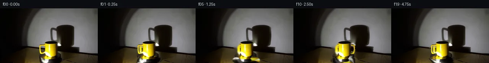

![首帧]()

Round 00
2026-11-05T03:21:03.346186+00:00像素候选变化代码 +212/−0inspection 更新
pixels ea85234a2084bfa7 · code 096992d23d10acb1
查看本轮 generate.py 真实 diff
--- previous/generate.py +++ current/generate.py @@ -0,0 +1,212 @@ +#!/usr/bin/env python3 +"""Generate the PixelWorld-Text continuation using local RGB operations only.""" + +from pathlib import Path +import math + +import cv2 +import numpy as np +from PIL import Image, ImageDraw, ImageFont + +import artifact_io + + +ROOT = Path(__file__).resolve().parent +H, W = 144, 256 + + +def soft_ellipse(cx, cy, rx, ry, feather=0.8): + """Analytic antialiased ellipse mask.""" + yy, xx = np.mgrid[0:H, 0:W] + d = np.sqrt(((xx - cx) / rx) ** 2 + ((yy - cy) / ry) ** 2) + return np.clip((1.0 + feather / min(rx, ry) - d) * min(rx, ry) / feather, 0, 1) + + +def body_occlusion_mask(): + """Conservative mug silhouette used only to hide the rear handle.""" + mask = np.zeros((H, W), np.uint8) + cv2.ellipse(mask, (133, 93), (17, 7), 0, 0, 360, 255, -1, cv2.LINE_AA) + pts = np.array([[116, 92], [150, 92], [148, 122], [141, 134], + [115, 134], [113, 129], [117, 119]], np.int32) + cv2.fillPoly(mask, [pts], 255, cv2.LINE_AA) + return mask.astype(np.float32) / 255.0 + + +def make_handle_free_source(source): + """Remove the reference left handle while retaining the photographed body.""" + yy, xx = np.mgrid[0:H, 0:W] + outer = ((xx - 111.5) / 12.0) ** 2 + ((yy - 108.5) / 17.2) ** 2 < 1 + # Include its two short attachment zones but do not enter the main body. + attachments = (xx >= 111) & (xx <= 117) & (yy >= 92) & (yy <= 126) + erase = ((outer | attachments) & (xx <= 117)).astype(np.uint8) * 255 + erase = cv2.dilate(erase, np.ones((3, 3), np.uint8), iterations=1) + cleaned = cv2.inpaint(source, erase, 4, cv2.INPAINT_TELEA) + # Restore the photographed central body exactly over any conservative overlap. + occ = body_occlusion_mask() + cleaned = np.clip(cleaned * (1 - occ[..., None]) + source * occ[..., None], 0, 255) + return cleaned.astype(np.uint8) + + +def warp_shadow(source, theta): + """Periodic, soft non-rigid change confined to the existing cast shadow.""" + yy, xx = np.mgrid[0:H, 0:W].astype(np.float32) + c, s = math.cos(theta), math.sin(theta) + # Zero displacement at the supplied pose. The two lobes model the handle's + # height-dependent contribution while the axisymmetric body shadow stays put. + g1 = np.exp(-(((xx - 183) / 36) ** 2 + ((yy - 72) / 35) ** 2)) + g2 = np.exp(-(((xx - 196) / 32) ** 2 + ((yy - 103) / 25) ** 2)) + dx = (3.3 * (1 - c) * g1 + 1.7 * s * (g1 - 0.45 * g2)).astype(np.float32) + dy = (1.5 * s * g1 - 0.8 * (1 - c) * g2).astype(np.float32) + remapped = cv2.remap(source, xx - dx, yy - dy, cv2.INTER_CUBIC, + borderMode=cv2.BORDER_REFLECT_101) + # Feathered gate: wall shadow only, never the mug itself or frame boundary. + gate_x0 = 1 / (1 + np.exp(-(xx - 150.5) / 1.8)) + gate_x1 = 1 / (1 + np.exp((xx - 226.0) / 2.5)) + gate_y0 = 1 / (1 + np.exp(-(yy - 38.0) / 2.2)) + gate_y1 = 1 / (1 + np.exp((yy - 124.0) / 2.0)) + gate = (gate_x0 * gate_x1 * gate_y0 * gate_y1 * np.clip(g1 + g2, 0, 1))[..., None] + return np.clip(source * (1 - gate) + remapped * gate, 0, 255).astype(np.uint8) + + +def rotate_turntable(frame, source, theta): + """Rotate photographed turntable pixels in an ellipse (perspective top view).""" + yy, xx = np.mgrid[0:H, 0:W].astype(np.float32) + cx, cy, rx, ry = 132.0, 136.0, 35.0, 13.0 + u = (xx - cx) / rx + v = (yy - cy) / ry + rho = np.sqrt(u * u + v * v) + ang = np.arctan2(v, u) - theta + mapx = (cx + rx * rho * np.cos(ang)).astype(np.float32) + mapy = (cy + ry * rho * np.sin(ang)).astype(np.float32) + spun = cv2.remap(source, mapx, mapy, cv2.INTER_CUBIC, + borderMode=cv2.BORDER_REFLECT_101) + # Apply mainly to the visible rim/outer top, below the mug. A soft mask + # avoids a pasted ellipse edge. + annulus = np.clip((rho - 0.34) / 0.10, 0, 1) * np.clip((1.08 - rho) / 0.10, 0, 1) + lower = 1 / (1 + np.exp(-(yy - 125.5) / 1.2)) + table = annulus * lower … diff truncated; 125 more lines …